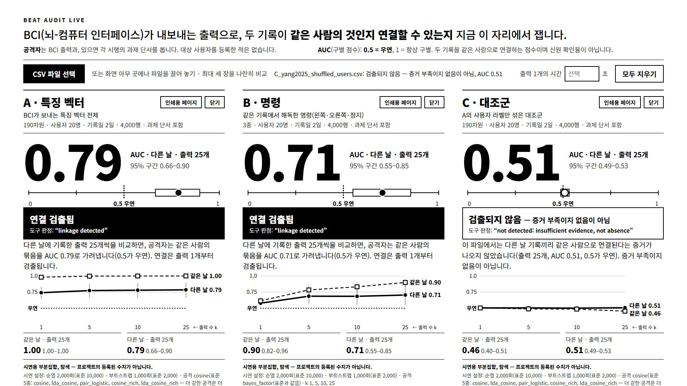

BEAT 결과 발표 · 콜로라도 HB24-1058(2024) · 캘리포니아 SB 1223 · UNESCO 권고(2025) · 법적 결론은 내리지 않는다
02
02 첫 답
특징은 사람을 알아본다
0.994
같은 날 · 54명
BEAT 결과 발표 · 확증 C2 기준값 · Lee2019 54명 · 같은 날 · 식별 정확도 · 우연 0.019
03
03 반전 하나
채점자가 한편이었다
0.026
0.951
함께 학습한 평가자
따로 학습한 공격자
BEAT 결과 발표 · 확증(실험 B) · BCI IV 2a 9명 · 같은 날 · 식별 정확도 · 우연 0.111
04
03 반전 둘
날이 바뀌면 숫자도 바뀐다
0.994
0.520
같은 날
다른 날
BEAT 결과 발표 · Lee2019 54명 · 식별 정확도 · 0.994 확증 기준값 · 0.520 사전등록 추정치 · 우연 0.019
05
04 전환
주장 대신, 측정
beat_audit
넣는다
돌린다
받는다
출력 파일
beat-audit run
연결 보고서
BEAT 결과 발표 · 공격자는 출력과 과제 단서만 본다 · 뇌파 원본과 이름은 모른다
06
04 시연
파일 셋
A
B
C
특징
명령
이름표를 섞은 대조
BEAT 결과 발표 · 시연용 부분 자료 · Yang2025 20명 · 탐색 · 등록된 결과와 섞지 않는다
07
04 시연 · 대체 화면

BEAT 결과 발표 · 미리 찍은 시연 화면 · 시연용 부분 자료 · Yang2025 20명 · 탐색 · 등록된 결과와 섞지 않는다
08
05 답
명령만 보내도 이어진다
0.855
0.567
전체 특징 2분 40초
왼쪽·오른쪽·정지 명령 6분 40초
BEAT 결과 발표 · 사전 지정(비맹검) · Yang2025 51명 · 첫날 ↔ 다른 날 · 연결 AUC · 공격자는 과제 단서를 봄 · 0.5 = 우연
09
05 선택
덜 이어질 뿐, 끊겼다는 증거는 없다
0.835
8차원 특징
0.663–0.696
그 특징의 명령
BEAT 결과 발표 · 탐색 · 연결 AUC · Yang2025 51명 · 2일차 ↔ 3일차 · 다른 날 · 출력 20개 · 과제 정확도 모두 0.544 · 0.5 = 우연
10
06 자백
먼저 잡힌 것은 나였다
0.543
평균만 본 공격자
0.630–0.677
그 특징의 명령
0.688
고친 공격자
BEAT 결과 발표 · 탐색 · 연결 AUC · Lee2019 54명 · 8차원 특징 · 다른 날 · 출력 20개 · 0.543은 최종 도구의 저장 실행
11
07 주장하지 않는 것
01
02
03
약한 해독기
비맹검
과제 단서
0.544–0.555
결과를 이미 아는 51명
빼도 0.855 → 0.852
BEAT 결과 발표 · 01 탐색, Yang2025 과제 정확도, 우연 0.5 · 02 사전 지정(비맹검), 연구자가 이 51명의 신원 결과를 알고 정한 시험 · 03 탐색 · 사후, Yang2025 V1, 연결 AUC
12
BEAT PROJECT · 결과 발표
다른 날, 강한 공격자로 재 봤습니까?
beat-audit run · github.com/gigalove6783-pixel/beat-eeg-privacy
BEAT 팀 이동현 · 장규범
13
백업 B1 · v1–v2
봉인한 주장 아홉 개 중 다섯 개 지지
데이터
사전등록한 주장의 판정
BCI IV 2a · 9명
H1, H2 지지 안 됨
Lee2019 · 54명
C1, C2, C4 지지 · C3 지지 안 됨
Yang2025 · 51명 · 다른 날
M1, M3 지지 · M2 지지 안 됨
v2 논지 · 연구 M의 결과를 보기 전에 결정 로그에 고정
“BCI 전송물의 신원 노출과 방어 효과는 공격자가 어느 날의 기록으로 등록하느냐에 따라 달라지므로, 같은 날 수치 하나로는 위험도 보호도 주장할 수 없다.”
BEAT 결과 발표 · v1–v2 수치는 등록한 공격자의 식별 정확도로, 연결 AUC와 다른 척도다
B1
백업 B2 · 도구 검증
정답을 아는 합성 자료로 먼저 검증했다
0.049
0.954
15/200
0.0
거짓 검출률 최대
참값 포함률 최저
확장 영가설 최대
등록 수치 재현 차이
명목 0.05 이하 세 크기 1,000회씩 0.031 · 0.047 · 0.049
요구 0.90–0.99 안 게이트 대상 두 설계 9명 설계 AUC 0.938
99% 허용 3–19회 안 비교기 3종 200회씩 명목 5%보다 높다
0.994 → 0.994 0.520 → 0.520 닫힌 집합 모듈
BEAT 결과 발표 · 합성 자료 검증 · 연결 측정은 합성 검증이, 닫힌 집합 모듈은 재현이 맡는다 · 포함률 최저는 대비 구간
B2
백업 B3 · V1과 V2
계산 전에 고정하고 한 번 돌린 배치
예측
무엇을 이었나
연결 AUC [95%]
Holm p
판정
V1
전체 특징, 1일차 ↔ 2–3일차, 출력 20개
0.855 [0.802, 0.905]
2.0 × 10⁻⁴
지지
V2
8차원 병목의 명령 τ 0.60, 명령 50개
0.567 [0.540, 0.596]
2.0 × 10⁻⁴
지지
대비
전체 특징, 같은 날 − 다른 날
0.144 [0.094, 0.197]
검정 없음
판정 없는 추정치
Holm 보정: V1과 V2, α = 0.05 freeze-5 (커밋 55cd01e) 뒤 배치 한 번 · 180칸 모두 정상 · 독립 감사 재계산 일치 두 공격자 모두 출력과 각 시행의 과제 단서를 봤다 이 51명의 신원 결과는 연구 M에서 이미 알았으므로 확증 재현이 아니다
BEAT 결과 발표 · 사전 지정(비맹검) · Yang2025 51명 · 연결 AUC · 0.5 = 우연
B3
백업 B4 · 전송 사다리
일곱 단계 모두에서 연결이 검출됐다
단계 (출력 20개)
과제 BA
같은 날
다른 날 [95%]
전체 특징
0.555
1.000
0.910 [0.864, 0.950]
8차원 병목
0.544
0.988
0.835 [0.781, 0.880]
공용 해독기 명령 τ 0.50
0.544
0.827
0.663 [0.590, 0.727]
공용 해독기 명령 τ 0.60
0.544
0.864
0.696 [0.619, 0.759]
사용자별 해독기 명령 τ 0.50
0.545
0.826
0.634 [0.557, 0.707]
사용자별 해독기 명령 τ 0.60
0.545
0.815
0.627 [0.550, 0.701]
사용자별 해독기 명령 τ 0.80
0.545
0.829
0.635 [0.556, 0.710]
맞춘 비교는 과제 BA 0.544인 8차원 병목과 공용 해독기 명령뿐 · 연결이 없음을 입증한 단계는 없다 Lee2019: 일곱 단계 모두 같은 날 검출 · 2a: 명령 다섯 단계 검출 안 됨 = 증거 부족, 없음 아님
BEAT 결과 발표 · 탐색 · Yang2025 51명 · 2–3일차 · 출력 20개 · 0.5 = 우연
B4
백업 B5 · 단서 없는 공격자
단서를 빼도 거의 그대로, 예외 한 칸
조건 · 출력 20개, V2만 명령 50개
단서 봄
단서 없음 [95%]
단서 없이
V1 · Yang2025 전체 특징 · 1일차 ↔ 2–3일차
0.855
0.852 [0.806, 0.896]
검출
V2 · Yang2025 8차원 병목 명령 τ 0.60 · 1일차 ↔ 2–3일차
0.567
0.554 [0.526, 0.582]
검출
Yang2025 8차원 병목 · 2일차 ↔ 3일차
0.835
0.834 [0.778, 0.881]
검출
Yang2025 공용 해독기 명령 τ 0.50 · 2일차 ↔ 3일차
0.663
0.650 [0.577, 0.715]
검출
Yang2025 공용 해독기 명령 τ 0.60 · 2일차 ↔ 3일차
0.696
0.685 [0.608, 0.750]
검출
Lee2019 전체 특징 · 세션 1 ↔ 2
0.954
0.952 [0.929, 0.971]
검출
Lee2019 8차원 병목 · 세션 1 ↔ 2
0.688
0.681 [0.636, 0.721]
검출
Lee2019 공용 해독기 명령 τ 0.50 · 세션 1 ↔ 2
0.630
0.507 [0.494, 0.519]
검출 안 됨
Lee2019 공용 해독기 명령 τ 0.80 · 세션 1 ↔ 2
0.677
0.670 [0.619, 0.715]
검출
예외: 정지 없는 왼쪽·오른쪽 명령(τ 0.50)은 Lee2019에서 단서 없이 우연 근처였고 검출되지 않았다(p = 0.11) 증거 부족이지 없음이 아니며, 이유는 시험하지 않았다 · Yang2025에서는 같은 명령이 단서 없이도 이어졌다 재지 않은 것: 출력에서 단서를 추측하는 공격자 · 순서·시간 모형 · 다른 k와 비교기 · 조건 사이 다중성 보정
BEAT 결과 발표 · 탐색 · 사후: 결과를 본 뒤 target 열만 뺀 재실행 · 단서 봄 재실행은 기록값과 정확히 일치
B5
백업 B6 · 실패와 미입증
실패했거나 입증하지 못한 것
상태
항목
내용
점검 실패
갤러리 크기 외삽
Yang2025 180칸 중 62칸(V1 칸 포함)이 독립 모형 점검에 실패, 그 칸은 큰 N을 내지 않는다
명목과 다름
순차 공격자
명목 0.05 · V2 칸 잘못 연결 0.131, 놓침 0.693 합성 자료에서는 0.047, 0.024
일관된 개선을 입증하지 못함 (탐색)
사용자별 해독기의 과제 BA
사용자별 대 공용: Yang2025 0.545 대 0.544 · Lee2019 0.646 대 0.692 · 2a 0.759 대 0.718
자기 증명
저장소로 증명할 수 없는 것
동결 커밋과 태그가 배치보다 21초 앞선다는 Git·로그 시각, 기록되지 않은 실행이 없다는 것, 그와 별개인 push 순서
표기 주의
보고서 문구
report.md는 판정이 아닌 177칸에도 “linkage detected”를 찍는다. 판정은 V1과 V2뿐이다